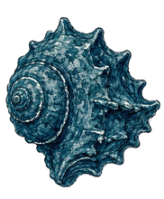
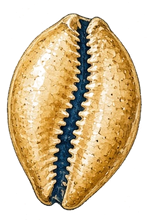

Lobsy
Sterrenkust
8B · K7R-2QM
Pauze
Duinpad
Hier ben je
Schelpenrij
Maangrot
Schatkaart
Pauze-eiland
Vuurtoren
Lampen
Sterrenbaai
Dit ben jij
Puzzel 1 van 3
· Schelpenrij · na vraag 15
Puzzel 1 van 3
Schelpenrij
Vind het patroon in de rij schelpen op het maanstrand.


?
1
Kijk goed naar de rij.
2
Zoek wat er steeds terugkomt.
3
Kies welke schelp erna komt.
Geen klok
Weet je het niet? Ga gewoon verder
Laat de uitleg voorlezen
Start de puzzel
Lobsy
Eerste deel klaar. Even je hoofd gebruiken.
Lees voor
 LobsySterrenkustLobsySterrenkust
LobsySterrenkustLobsySterrenkust